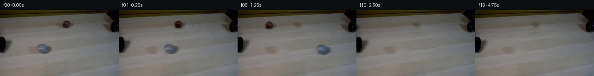

![首帧]()

Round 00
2026-11-05T10:37:02.914171+00:00像素候选变化代码 +141/−0inspection 更新
pixels 4e011cd8f077f9ac · code 64d2d1b82b866d49
查看本轮 generate.py 真实 diff
--- previous/generate.py +++ current/generate.py @@ -0,0 +1,141 @@ +#!/usr/bin/env python3 +"""Generate the 20-frame PixelWorld continuation with local pixel operations.""" + +from pathlib import Path + +import cv2 +import numpy as np +from PIL import Image, ImageDraw + +import artifact_io + + +ROOT = Path(__file__).resolve().parent +H, W = 144, 256 + + +def soft_ellipse(cx, cy, rx, ry, feather=3.0): + """Return a soft elliptical alpha mask.""" + yy, xx = np.mgrid[0:H, 0:W] + d = np.sqrt(((xx - cx) / rx) ** 2 + ((yy - cy) / ry) ** 2) + return np.clip((1.0 + feather / max(rx, ry) - d) * max(rx, ry) / feather, 0, 1) + + +def make_clean_plate(source): + """Locally inpaint the two moving balls while preserving pipes and table.""" + mask = np.zeros((H, W), np.uint8) + # Expanded masks include the soft high-speed blur and contact shadows. + cv2.ellipse(mask, (94, 85), (19, 14), 0, 0, 360, 255, -1) + cv2.ellipse(mask, (144, 31), (14, 12), 0, 0, 360, 255, -1) + plate = cv2.inpaint(source, mask, 5, cv2.INPAINT_TELEA) + + # Reintroduce fine, low-contrast wood streaks across the filled areas by + # interpolating adjacent scanline texture. This avoids smooth inpaint blobs. + for cx, cy, rx, ry in [(94, 85, 19, 14), (144, 31, 14, 12)]: + yy, xx = np.mgrid[0:H, 0:W] + inside = (((xx - cx) / rx) ** 2 + ((yy - cy) / ry) ** 2) <= 1 + # Very subtle horizontal texture from neighboring table pixels. + left_x = max(0, cx - rx - 3) + right_x = min(W - 1, cx + rx + 3) + for y in range(max(0, cy - ry), min(H, cy + ry + 1)): + xs = np.flatnonzero(inside[y]) + if len(xs) == 0: + continue + ramp = np.linspace(plate[y, left_x].astype(float), + plate[y, right_x].astype(float), len(xs)) + # Keep most of TELEA's 2D structure; the ramp only tames artifacts. + plate[y, xs] = np.clip(0.82 * plate[y, xs] + 0.18 * ramp, 0, 255) + return plate.astype(np.uint8) + + +def shifted_residual(plate, source, alpha, dx, dy): + """Translate a source-vs-clean-plate residual with bilinear interpolation.""" + residual = source.astype(np.float32) - plate.astype(np.float32) + residual *= alpha[..., None] + matrix = np.float32([[1, 0, dx], [0, 1, dy]]) + return cv2.warpAffine( + residual, + matrix, + (W, H), + flags=cv2.INTER_LINEAR, + borderMode=cv2.BORDER_CONSTANT, + borderValue=0, + ) + + +def build_frames(source): + plate = make_clean_plate(source) + + # These soft masks capture body, optical motion blur, and contact shadow. + gray_alpha = soft_ellipse(94, 85, 19, 14, feather=4.0) + brown_alpha = soft_ellipse(144, 31, 14, 12, feather=3.5) + + frames = [source.copy()] + for t in range(1, 20): + frame = plate.astype(np.float32) + + # Straight constant-speed tracks. Small y drift follows the table plane. + gray_dx = 18.0 * t + gray_dy = 0.35 * t + brown_dx = -15.0 * t + brown_dy = 0.45 * t + + frame += shifted_residual(plate, source, gray_alpha, gray_dx, gray_dy) + frame += shifted_residual(plate, source, brown_alpha, brown_dx, brown_dy) + + # A tiny moving tonal modulation inside each ball suggests rolling while + # retaining the photographed texture and exposure blur. … diff truncated; 54 more lines …